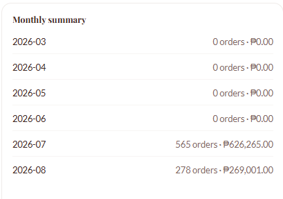
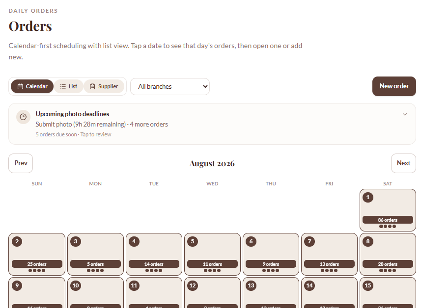
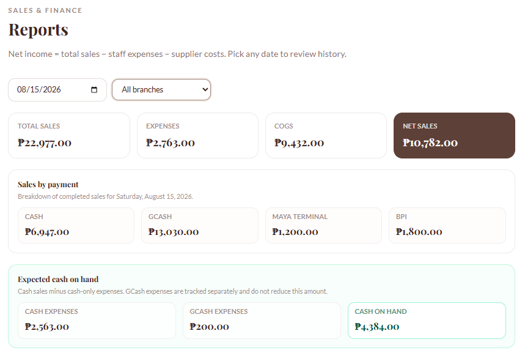
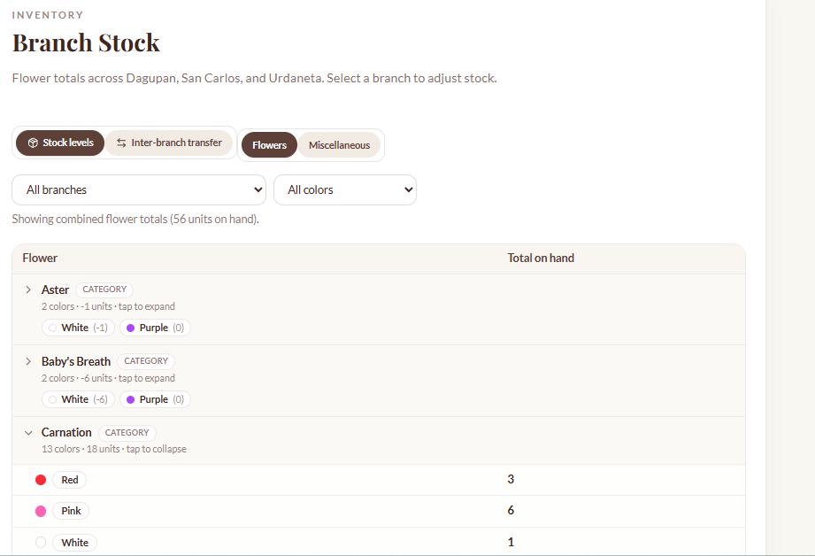

01 / SINGLE BRANCH
₱35–45K
Core system: inventory + orders. No inter-branch transfers. For shops that aren’t multi-location yet.
Custom inventory, orders, and staff systems — configured for your business, your branches, your products. No generic software, no monthly SaaS fumbling. Built and set up by me, for you.
Multi-branch inventory, orders, staff roles, transfers, daily counts, and reports — all running, all interactive. Names and ₱ totals inside are sample data, not Papers & Petals’ books.
Underneath, it's inventory, orders, staff roles, and branch transfers — a system built for how multi-branch retail actually runs. The live client happens to sell flowers. The demo uses placeholder SKUs on purpose.
Bakery trays, hardware stock, feed sacks, uniforms — the engine doesn't care what's on the shelf.
See every feature →



Screenshots from the live Papers & Petals system. No customer names or numbers shown.
Branches, products, staff, how orders come in today. A short conversation, in person or on call.
Your catalog, your branches, your staff roles — set up on the same engine behind Papers & Petals.
Live system, your team trained on it, and me on call if anything needs adjusting.
Want customers ordering on a site instead of Messenger? That’s an add-on, not the default. How that works →
Core system: inventory + orders. No inter-branch transfers. For shops that aren’t multi-location yet.
What Papers & Petals runs. Branches, transfers, roles, reports — scaled to how many locations and which features you actually need.
Support + hosting. ₱3K minimum, up with branch count. Covers the servers and real time when something needs adjusting.
Not a SaaS subscription you configure yourself. Build is one-time. Storefront, if you want it, is scoped on top — not the default.